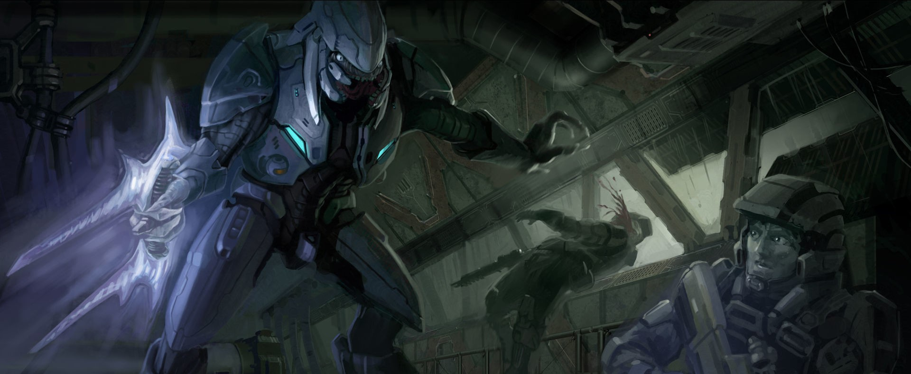
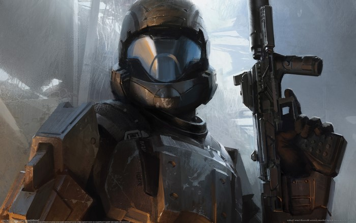

Who We Are
"First to Fight." — UNSC Marine Corps Credo The UNSC Marine Corps stands as one of the most formidable and resilient branches of the United Nations Space Command (UNSC), with a proud tradition of being the first into battle. This elite force is responsible for executing land-based expeditionary, amphibious, and airborne combat operations, often on the front lines of humanity's defense. Utilizing the swift mobility of the UNSC Navy, Marines are deployed rapidly across galaxies, ready to engage and neutralize threats wherever they arise. In addition to their combat roles, UNSC Marines are entrusted with the critical task of defending Navy vessels and installations from hostile forces, ensuring the safety of vital infrastructure and personnel. Although structured under the Unified Ground Command, the Marine Corps operates in close coordination with the UNSC Naval Command, often assuming joint authority in strategic operations. As one of the five esteemed uniformed services of the UNSC Armed Forces, the Marine Corps continues to lead the charge, upholding humanity's last line of defense across the stars.

(photo captured from the Helmet-cam of PVT. J.Rossbach of the 405th Marine Infantry Division K.I.A. during an ambush during the battle)
Origins and Formation
The United States Marine Corps paved the way for the formidable UNSC Marine Corps. As the fires of the Interplanetary War ignited in the 2160s, governments across the Sol system ramped up their military might. Yet, disorganization plagued their scattered forces, causing chaos among the ranks. In response, the United Nations stepped in and, in 2163, formed a new and elite fighting force: the United Nations Space Command, complete with its powerful Navy and its indomitable Marine Corps. Born from the fusion of naval and spaceborne expeditionary units from across the globe, the UNSC Marine Corps stood as a united, unstoppable force. Their first great test came in December 2163, when the enemy struck at the heart of humanity's shipbuilding efforts on Mars. The UNSC Marines, forged in fire and steel, launched a series of lightning-fast assaults, overwhelming the enemy forces near Argyre Planitia. It was humanity’s first extraterrestrial military engagement, and the Marines emerged victorious. This resounding victory solidified the UNSC Marine Corps as the galaxy’s premier fighting force. From then on, UNSC Navy warships would carry battalions of these battle-hardened warriors, ready to strike fear into the heart of any enemy. Recruitment surged, and propaganda rallied entire generations to join their ranks. By 2170, the UNSC had crushed the forces threatening Earth, and the Marines were celebrated as humanity’s saviors. They remain the sword and shield of the UNSC, prepared to defend all of mankind against any threat, no matter how distant or how dire.
The Insurrection
From 2494 to 2525, the UNSC Marine Corps was the first line of defense against Insurrectionist uprisings across UNSC colonies and star systems. By 2512, the Marines found themselves engaged in one of the largest and most significant operations in their storied history—Operation: TREBUCHET. This daring campaign aimed to crush rebel forces in the volatile Eridanus and Epsilon Eridani star systems, where insurgent activities had reached a fever pitch. The fearless 9th Marine Expeditionary Force was dispatched to Eridanus II, with orders to capture rebel leaders and restore order. One of these elite units, the 1st Battalion of the 21st Marine Division, led by Lieutenant Colonel Ponder, embarked on a high-stakes mission in Elysium City. Their goal: to capture the second-in-command of the rebel forces. But the operation took a tragic turn, ending in a devastating loss—rebel leader's family members were killed, and Ponder himself was wounded and subsequently demoted. By 2524, the rebellion had spread to the colony world of Tribute. There, a determined Marine battalion, led by Lieutenant Colonel Aboim and backed by the UNSC corvette *Bum Rush*, along with AV-14 Hornet air support, took on the daunting task of halting rebel bomb makers operating near the city of Casbah. In a fateful operation, two special warfare squads—under the command of the legendary Staff Sergeants Avery Johnson and Nolan Byrne—found themselves in the midst of a catastrophic event. During a tense hostage situation at a local restaurant, Byrne's team suffered heavy losses. The operation ended in disaster, with thirty-eight civilians, three Marines, and two rebels losing their lives in the ensuing bombing. The grim toll only fueled the Marines' resolve to fight harder and protect humanity from the insurrectionist threat.
Human-Covenant War
The UNSC Marine Corps first encountered the alien Covenant at the horrific First Battle of Harvest in 2525. With only three Marine officers present, training the Colonial Militia, the Marines faced a fierce and relentless enemy. Despite being outnumbered and outgunned, the Marines fought valiantly, with Captain Ponder becoming the Corps' first hero to fall in defense of humanity. His sacrifice marked the beginning of the Marine Corps' legendary stand against the alien threat.
(image captured from the helmet-cam of SGT. D.Arazi during the evacuation of Outer colony Planet Coral)
 After Harvest, the Marines proved time and again that they were humanity's shield. During the grueling Harvest Campaign from 2526 to 2531, the Marines established an arctic base on the planet, setting the stage for one of their most remarkable victories. Led by the fearless Sergeant John Forge, the Marines encountered a devastating Covenant assault under the ruthless Arbiter Ripa 'Moramee. Despite overwhelming odds, Forge rallied his scattered troops, retook the base, and held off the Covenant long enough for reinforcements to arrive. This victory wasn't just a battle won, but a message to the Covenant: humanity, and its Marines, would not fall easily. In the final weeks of 2525, the UNSC Marine Corps deployed en masse to Alpha Corvi II, tasked with defending its capital city from a Covenant onslaught. The Covenant came with superior firepower, but the Marines fought with unmatched tenacity. Their efforts were critical in diverting Covenant forces, allowing Blue Team to secure a crucial artifact. Though the battle came at a great cost, with over thirty percent casualties, the Marines proved once again that they would sacrifice everything to defend the future of humanity. Their bravery forced the Covenant to fight for every inch of ground, no matter the cost.Operating Forces
Personnel
Large numbers of men and women are employed by the UNSC Marine Corps. Service people hold ranks, which are divided between officers and enlisted. The rank structure of the UNSC Marine Corps is based around that of the United States Marine Corps.
structure
While UNICOM's structure is loosely modeled after the former United States Marine Corps, it has notable differences due to technological advancements and humanity's spread across the stars. The use of artificial intelligence and automated systems allows for much of UNICOM's administrative functions to be handled efficiently, enabling human personnel to focus more on military operations. This efficiency, combined with the UNSC's rigorous training standards, ensures a high "tooth to tail" ratio of combat personnel to support staff. Additionally, UNICOM's commissioned and non-commissioned officers wield considerably more authority and autonomy compared to their historical counterparts. UNICOM maintains a largely standardized rank structure and organizational framework, with some exceptions based on specific service needs (such as the Marine Corps and Air Force generally not using Warrant Officers). This standardization applies across the three branches under UNICOM's command. The following provides an overview of typical UNICOM force deployments, particularly focused on the Marine Corps and Army. However, actual numbers in the field often vary due to operational circumstances, and higher command levels are supported by substantial logistics and support teams.
- Fireteam- 4 personnel led by a Lance Corporal or Corporal.
- Section- around 8 personnel led by a Lance Corporal or Corporal.
- Squad- around 12 to 13 personnel lead by a Lance Corporal, Corporal or Sergeant. Squads consist of three fireteams, with a basic rifle squad consisting of two fireteams supported by a heavy weapons fireteam. A weapons squad contains all heavy weapons fireteams.
- Platoon- around 40 personnel led by a Second Lieutenant and a Staff Sergeant.Marine rifle platoons consist of three squads, while vehicle platoons consist of two to four vehicle sections.
- Company- around 180 personnel consisting of four platoons plus an additional Company Headquarters Section, commanded by a First Lieutenant or Captain. These may be used by UNICOM as a special task force.
- Regiment- 3,000 personnel commanded by a Lieutenant Colonel, Colonel or Brigadier General. Regiments are used by UNICOM as a rapid reaction force, and consist of three battalions plus an additional group of personnel designated as the "Regimental Headquarters Section".
forces
UNICOM oversees deployments of the UNSC Air Force and UNSC Army, as well as select units of the UNSC Marine Corps. Unlike the other branches, Marine Corps units can shift between NAVCOM and UNICOM command in combat zones, a process coordinated by UNSC Joint Deconfliction Teams. Marine units typically organized under UNICOM are responsible for long-term planetary security, training and equipping other forces, and augmenting other UNSC garrisons. However, Marine forces deployed in space or aboard UNSC starships, along with the Orbital Drop Shock Troopers (ODSTs), fall under NAVCOM authority. The ODSTs and Marine special forces report specifically to Naval Special Warfare Command. This distinction also applies to Marine units deployed by NAVCOM as landing parties or expeditionary ground combat forces, though this interpretation of the regulations is strongly disputed by UNICOM. Special operations under UNICOM’s purview are managed by its Unified Special Warfare Command. In addition to regular UNSC forces, UNICOM can assume control of colonial militias and regional security forces to achieve its objectives.
Special Forces
The O.D.S.T. Corps
The Orbital Drop Shock Troopers (ODST), informally referred to as Helljumpers, are an elite special operations component of the UNSC Marine Corps and the Corps' rapid reaction force specialized in transorbital support interdiction tactics. One of the primary special operations forces of the United Nations Space Command, the ODST are under the administrative and operational control of Naval Special Weapons.
Command and Control
The Marine Corps is subordinate to the UNSC High Command and the branch has a seat on the UNSC Security Council, currently represented by General Hogan. The administrative head of the Marine Corps is the Commandant of the Marine Corps. The Marine Corps is largely under the authority of the UNSC's Unified Ground Command (UniCom), responsible for managing ground-based operations of the Marine Corps, the UNSC Air Force, and the UNSC Army. However, due to the Marines' expeditionary nature, the branch has some with the UNSC Naval Command, particularly in the Navy-dominated UNSC Fleet Command where the Marines have only a token representation.
Infantry Weapons
- The standard issue weapon for UNSC Marine Corps is Misriah Armory's MA5 assault rifle series
- The BR55 battle rifle used both as a standard service rifle and as marksman's weapon.
- M6 handgun series
- Special operations and vehicle crews are issued M7 submachine guns, with ODSTs typically using the suppressed model.
- Snipers operate the SRS99C-S2 AM and SRS99D-S2 AM, and more recently the SRS99-S5 AM, sniper rifle variants for anti-matériel and anti-personnel operations.
- The M45 and M90 shotguns are often utilized in close-quarters engagements. Once the weapon that defining the Marine Corps as the Unified Earth Government's spaceborne force-in-readiness, the Marine Corps has relegated the shotgun to less-visible duties with boarding parties, though the shotgun still remains an important weapon of close-quarters warfare.
- Anti-armor provided by the M41 "SPNKR" rocket launcher.
- M6 Spartan Laser
- Suppressive fire is provided by the M247 machine gun, the M247H machine gun, the AIE-486H machine gun, and mounted versions of the M41 "Vulcan".
- The M6634 and M7057, two variants of the NA4 flamethrower, are sometimes used in an anti-infantry role by specialists known as Hellbringers.
- The M9 fragmentation grenade
Ground Vehicles
- Worthog-Light Reconnaissance Vehicle and other variants
- M808 "Scorpion" Main Battle Tank
- Mongoose Ultra-Light All-Terrain Vehicle
- The Cyclops support exoskeleton
Honoring the Fallen
a moment of silence for those that ventured into the howling dark never to return.